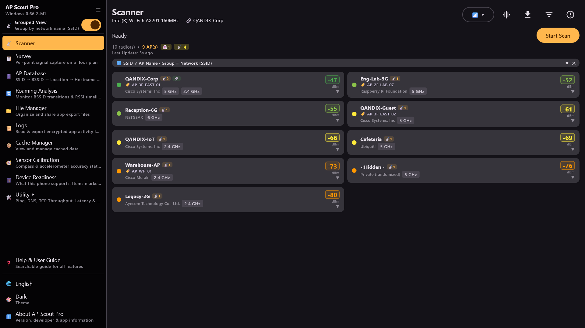
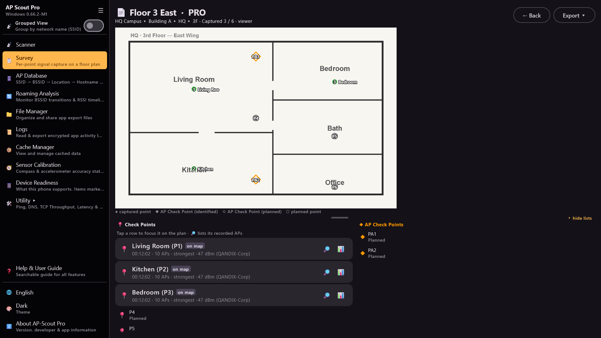
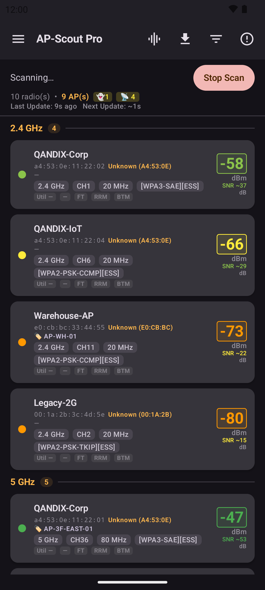

Professional-grade Wi-Fi analysis for engineers — real-time AP scanning across 2.4 / 5 / 6 GHz, interference ranking, floor-plan site surveys, roaming analysis and a full network toolkit. On Windows and Android.

Everything the site visit needs, in one tool — scan, analyze, survey, verify, export.
SSID, BSSID, RSSI, band, channel, width and vendor across 2.4 / 5 / 6 GHz — flat or grouped-by-SSID views with AP-Database name matching.
Congested channels ranked worst-first (co-channel + overlapping), in-app and in every export.
Point-by-point capture on a floor-plan background, organised Project > Site > Building > Floor, with per-band export sections.
BSSID transitions on an RSSI timeline with event markers, plus sticky-client detection with an exportable verdict ledger.
Per-AP RSSI / estimated-SNR history graphs and target-AP tracking as you move — exportable to CSV and Excel.
Per-AP beacon decode — identity, radio, capabilities, vendor fields and the raw IE dump, all copyable. Detects Wi-Fi 7 (802.11be): 320 MHz, MLO, FTM/RTT.
Ping, DNS, Traceroute, Port Check, HTTP, TLS Inspector, TCP Throughput, Latency Trend, Subnet Calculator, Wake-on-LAN, NTP, ARP Table.
AES-256-GCM encrypted AP Database, optional AES-256 password on all CSV / Excel / ZIP exports, encrypted on-device logs.
15 languages, light & dark themes, hover help on every control. Optional Survey Pro subscription for floor-plan surveys up to 5,000 points.
The same engine on your Windows laptop and your Android phone — surveys are portable between machines.

